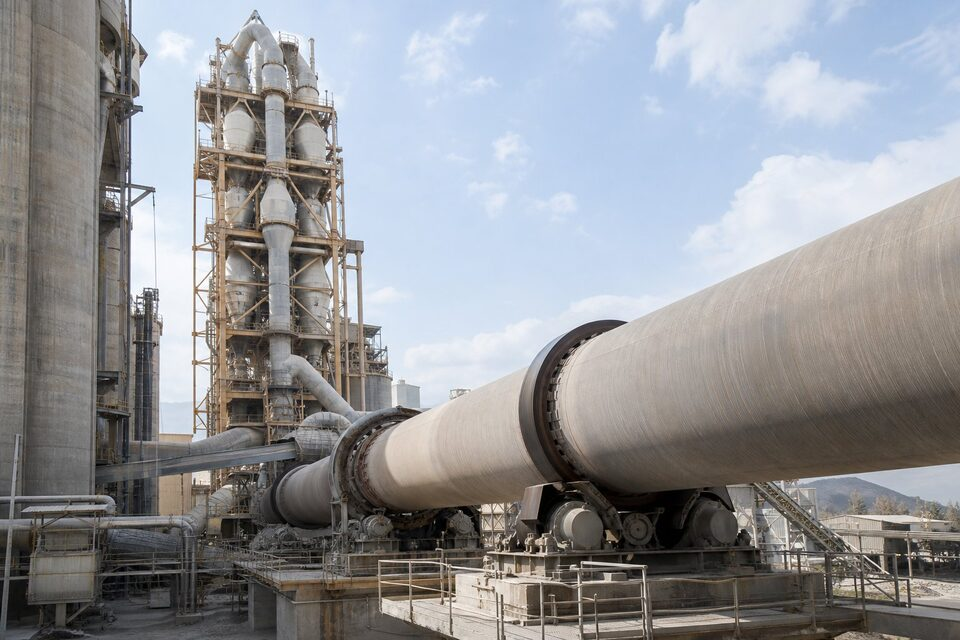

مروری بر خط تولید سیمان
تولید سیمان با استخراج و خردایش سنگ آهنگ و مارل شروع میشود؛ مواد خام در آسیابها پودر شده و پس از همگنسازی، از برج پیشگرمکن وارد کوره دوار میشوند. در کوره، دمای بالای حدود ۱۴۵۰ درجه سانتیگراد مواد را به کلینکر تبدیل میکند و خنککنها آن را به سرعت سرد میکنند. کلینکر با افزودنیها در آسیاب نهایی سیمان پودر و سپس بستهبندی یا فلهگیری میشود. در تمام این مسیر، تجهیزات در سه دشمن مشترک میجنگند: سایش ذرات معدنی، تنشهای حرارتی و بارهای مکانیکی سنگین. بنابراین فلسفه خرید در صنعت سیمان با صنایع فرایندی متفاوت است: تمرکز بر دوام قطعات، سرعت تامین یدکی و هزینه مالکیت در طول عمر، نه فقط قیمت اولیه.

کوره دوار و خنککن
کوره دوار یک استوانه فولادی بزرگ با آجر نسوز داخلی است که روی تکیهگاههای غلتکی با سرعت کم میچرخد؛ لاینر نسوز داخل آن در برابر دمای فرایند محافظت میشود و تعویض دورهای آن یکی از تعمیرات اصلی سالانه است. رینگهای چرخشی، چرخدندههای بزرگ و سیستم تکیهگاه از قطعات حساس کورهاند که خرابی آنها توقف کامل خط را در پی دارد. در پاییندست، خنککن کلینکر با صفحات متحرک و فنهای خود، هوای خنک را از میان بستر کلینکر عبور میدهد و صفحات و قطعات آن نیز در معرض سایش حرارتی قرار دارند. برای خریدار، معنای عملی این است که نقشه سالیانه تعویض نسوز و قطعات کوره باید مبنای برنامه خرید یدکی باشد و موجودی انبار بر اساس زمان تحویل سازنده تنظیم شود.
آسیابها و تجهیزات خردایش
- سنگشکنها: چکشها، رولرها و لاینرهای ضدسایش با عمر محدود و قابل پیشبینی.
- آسیاب مواد خام: گلولهها یا غلتکهای سنگزنی و سگمنتهای جدول.
- آسیاب سیمان: لاینرها، گلولهها و سیستمهای جداساز با سایش بالا.
- انتقالدهندهها: الواتورها، اسکرودرهای نقاله و نوار نقالهها با قطعات مصرفی.
- فنهای صنعتی: پروانهها و پوششهای مقاوم سایش برای غبار پر از ذرات.
در تجهیزات خردایش، هزینه قطعات مصرفی بخش بزرگی از هزینه عملیاتی را تشکیل میدهد و انتخاب متریال مناسب مستقیما بر فواصل تعویض اثر دارد. آلیاژهای ضدسایش مختلف برای مواد با سختی و رطوبت متفاوت رفتار متفاوتی دارند و گاهی یک تغییر کوچک در جنس لاینر، عمر آن را چند برابر میکند. بنابراین ارزیابی تامینکنندگان باید بر اساس آزمونهای میدانی و سوابق واقعی در کارخانههای مشابه انجام شود، نه صرفا مشخصات روی کاغذ. ثبت منظم نرخ سایش هر قطعه نیز به پیشبینی زمان سفارش و چانهزنی فنی با فروشندگان کمک میکند.
غبار، فیلترها و الزامات محیط زیستی
صنعت سیمان ذاتا غبارساز است و الزامات محیط زیستی، نصب و نگهداری سیستمهای غبارگیر را اجباری کردهاند. بگفیلترها و فیلترهای الکترواستاتیک در نقاط مختلف خط نصب میشوند و کیسهها و الکترودهای آنها اقلام مصرفی پرهزینهای هستند. انتخاب کیسه با جنس متناسب دمای گاز و شیمی غبار انجام میشود؛ انتخاب نادرست، عمر کیسه را به شدت کوتاه میکند. فنهای بزرگ این سیستمها نیز خود مصرفکننده انرژی و قطعات یدکیاند. از منظر خرید، قرارداد بلندمدت تامین کیسه و قطعات فیلتر با قیمت تثبیتشده، هم هزینه را قابل پیشبینی میکند و هم ریسک توقف ناشی از نبود یدکی را کاهش میدهد.
راهبرد قطعات یدکی در سیمان
مدیریت یدکی در کارخانه سیمان، ترکیبی از علم و تجربه است. قطعاتی که توقف آنها خط را میخواباند مانند رینگ کوره یا چرخدنده اصلی، باید در انبار موجود یا سفارشهای بلندمدتشان فعال باشند. قطعات مصرفی مانند لاینر و چکش نیز بر اساس نرخ سایش اندازهگیریشده، با نقطه سفارش مشخص مدیریت میشوند. در عمل، بهترین راهبرد ترکیبی از قراردادهای چتری با سازندگان اصلی برای قطعات حساس و رقابت آزاد برای قطعات عمومی است. شفافسازی نقشهها و مشخصات فنی هر قطعه نیز از اهمیت بالایی برخوردار است، چون بسیاری از تجهیزات سیمانی عمری چند دهه دارند و مدارک اصلی آنها ممکن است ناقص شده باشد؛ بازسازی مدارک، اولین گام هر برنامه خرید موفق است.
ارزیابی سازندگان و قراردادهای بلندمدت
در صنعت سیمان که قطعات مصرفی سهم بزرگی از هزینهها دارند، رابطه با سازندگان باید از یک خرید موردی به همکاری بلندمدت تبدیل شود. قراردادهای چتری برای قطعات پرمصرف مانند لاینرها، چکشها و کیسههای فیلتر، هم قیمت را در برابر تورم تثبیت میکنند و هم اولویت تحویل را برای خریدار تضمین مینمایند. در انتخاب سازنده، معیارهای میدانی مانند نرخ سایش واقعی قطعات در کارخانههای مشابه، توان ارائه نقشههای دقیق و سرعت پاسخ در شرایط اضطراری باید وزن بیشتری از قیمت اولیه داشته باشند. ارزیابی دورهای عملکرد فروشندگان بر اساس دادههای واقعی مصرف، این رابطه را شفاف و قابل مدیریت نگه میدارد و از وابستگی به تکمنبعهای پرریسک جلوگیری میکند.
جمعبندی
تامین در صنعت سیمان، مدیریت سایش و تداوم تولید است. با شناخت خط تولید، برنامهریزی یدکی بر اساس نرخ سایش واقعی، انتخاب متریالهای ضدسایش مناسب و قراردادهای بلندمدت برای قطعات حساس، میتوان توقفهای ناخواسته را کاهش و هزینه مالکیت تجهیزات را بهینه کرد.
سوالات رایج
خط تولید سیمان از چه تجهیزات اصلی تشکیل شده است؟
سنگشکنها، آسیاب مواد خام، برج پیشگرمکن، کوره دوار، خنککن کلینکر، آسیاب سیمان و سیستمهای بستهبندی؛ به همراه فنها، فیلترها و انتقالدهندههای گسترده.
چالش اصلی خرید در صنعت سیمان چیست؟
سایش شدید قطعات در تماس با مواد معدنی و دمای بالای کوره؛ بنابراین متریال ضدسایش و مقاوم حرارتی و زنجیره تامین قطعات یدکی پرمصرف اهمیت حیاتی دارد.
کدام قطعات در رده یدکی پرمصرف قرار میگیرند؟
لاینرهای آسیاب، چکشها و رولرهای سنگشکن، تسمههای نسوز، شاتبلاست و قطعات کوره مانند رینگها و غلتکهای تکیهگاه، و فیلترهای کیسهای بگفیلترها.
چرا توقف کوره دوار پرهزینه است؟
کوره قلب خط تولید است و هر ساعت توقف آن معادل از دست رفتن تولید کل کارخانه است؛ بنابراین تعمیرات و تعویض قطعات آن باید با برنامهریزی دقیق و قطعات آماده انجام شود.
مطالب مرتبط
تامین قطعات یدکی و تجهیزات خط تولید سیمان با متریال ضدسایش و مقاوم حرارتی.
مشاهده صفحه محصول ← ثبت RFQ همین محصولتامین این تجهیزات را به پیشرو تجهیز فرتاک بسپارید
شرکت پیشرو تجهیز فرتاک تامینکننده تخصصی تجهیزات صنعتی برای پروژههای نفت، گاز، پتروشیمی، فولاد و نیروگاهی است. برای دریافت پیشنهاد فنی و قیمت، استعلام (RFQ) خود را ثبت کنید تا کارشناسان مهندسی فروش در کوتاهترین زمان پاسخ دهند.
- تامین برق صنعتیتجهیزات تابلو و حفاظتی
- تامین تجهیزات صنایع نفت و گازپکیج مواد مطابق وندورلیست